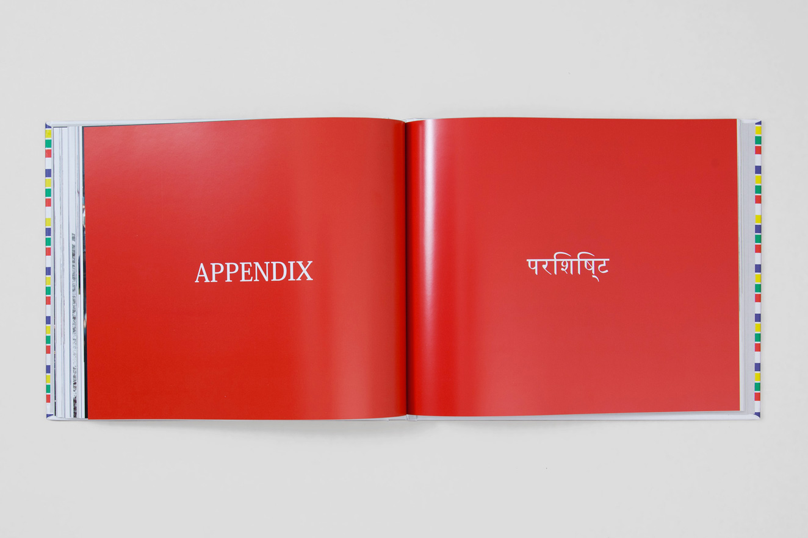
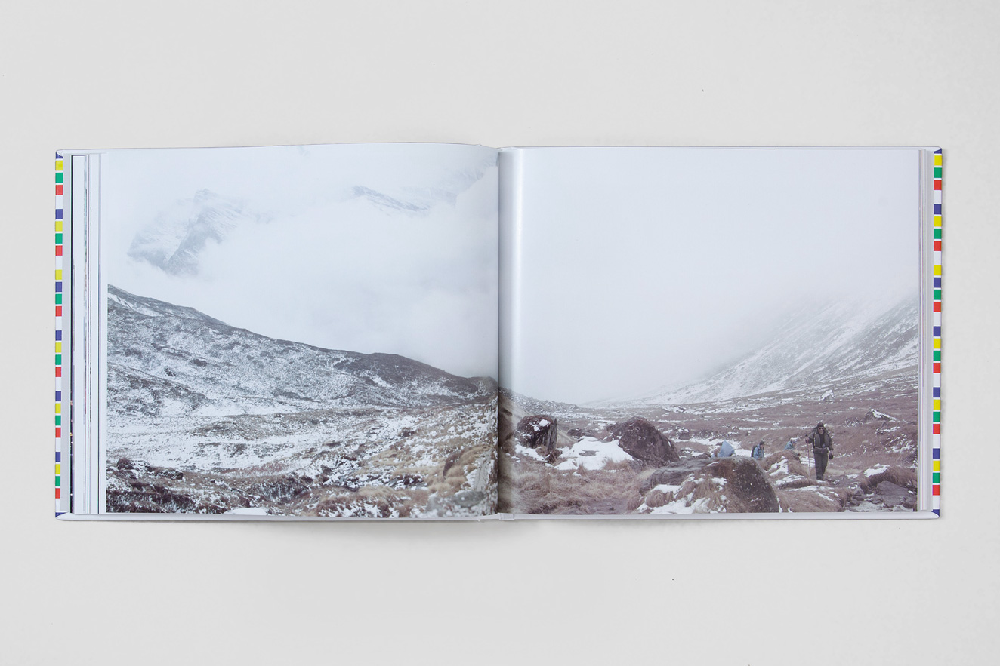
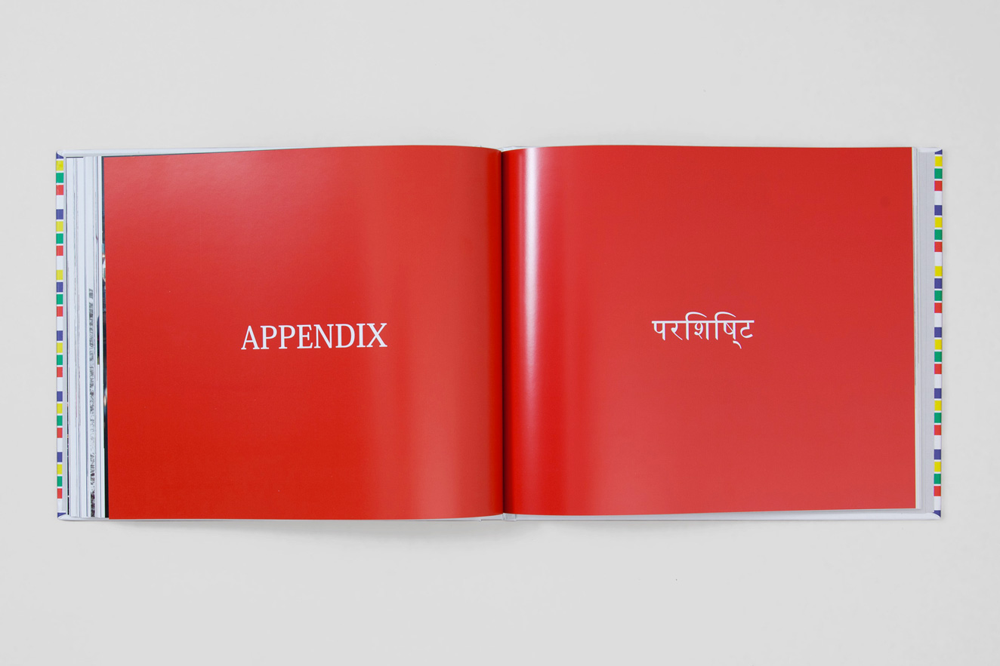
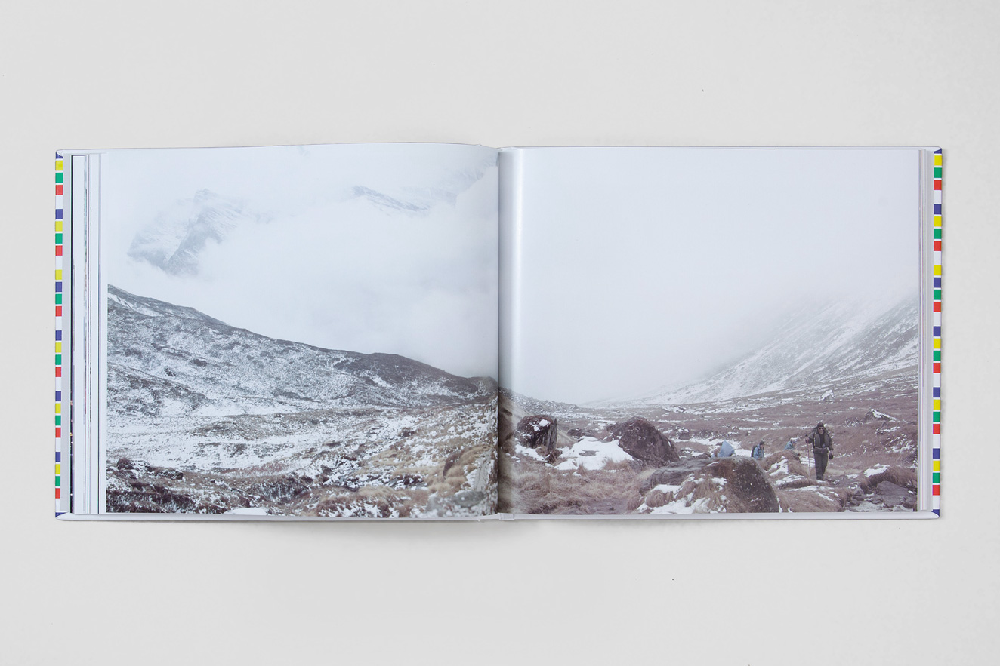

Eighteen days across Nepal
I have always been fascinated by remote holidays destinations and Nepal is one of my favourite. End of last year – after resigning my job at Sennep – I took a month off exploring this country with my best friends. Nepal is a truly enchanting place, with breath-taking landscapes, traditions and culture. We visited few regions, from the busy Kathmandu Valley to the lonely peaks of the Annapurna Conservation Area through the Chitwan National Park … and yes, I’ve been walking at more than 5000mt of altitude.
In 18 days we had collected thousands of photos and, in order to share ours personal experience, we selected and assembled our favorite ones in a unique editorial piece.
The book features 150 – carefully designed – pages, printed on the finest paper available and wrapped in a really elegant hardcover. “Eighteen days across Nepal” is available for you to buy here.
Personal project in collaboration with Francesco Di Ruberti
 


